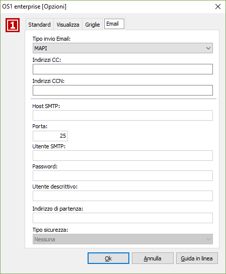

Opzioni email
è stata integrata la possibilità di scegliere il tipo di servizio per l'invio email utilizzabile quando le stampe vengono inviate dal pannello stampanti (Stampa su email). E' quindi possibile utilizzare MAPI, Outlook OLE Automation (se installato Microsoft Office) oppure SMTP; in quest'ultimo caso è necessario indicare i parametri di connessione al server SMTP. Inoltre è possibile indicare anche un recapito (CC o CCN) a cui far recapitare il messaggio inviato utile soprattutto in caso in invio via SMTP perchè, non utilizzando un client di posta, il messaggio non finisce automaticamente nella posta inviata .
